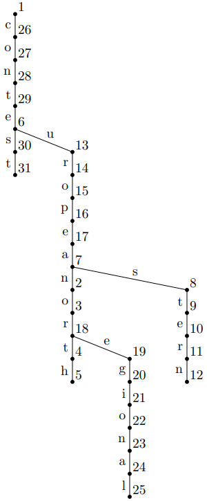

给定 $n$ 个单词 (由小写字母构成的字符串)，你需要构造一棵有根树 $T = \left( V, E \right)$，满足：
如，对于单词集合 $\left\{ \texttt{north}, \texttt{eastern}, \texttt{european}, \texttt{regional}, \texttt{contest} \right\}$，下面这棵树就满足条件：
同时，你需要使得这棵树的顶点个数尽可能少。
第一行包含一个正整数 $n$ ($n \leq 50$)，表示单词的个数。
接下来 $n$ 行，每行一个由小写字母构成的非空字符串 $s_i$ ($\left| s_i \right| \leq 10$)，描述一个单词。
第一行输出一个整数 $m$，表示所构造的有根树的顶点个数。你需要保证 $m$ 是所有可行解中最小的。
接下来 $n$ 行，第 $i$ ($1 \leq i \leq n$) 行输出一个整数 $p_i$ 和一个字符 $c_i$，表示顶点 $i$ 的父节点编号和边 $\left( i, p_i \right)$ 上的字母。特别地，如果 $i$ 是根节点，则该行只需输出一个 $0$。
如果有多棵满足条件的树，输出任意一棵均可。
考虑建出这些串的 Trie 树 $T$，它显然是满足条件的树，但它的点数并不一定是最小的。
那是因为，Trie 树要求对于每个模式串 $w$，它一定出现在根到某个点的路径上，也就是说满足条件的 $\left( u, v \right)$ 一定有 $u$ 是根节点。
但是在这道题中，有些串允许从树中间的某个节点开始拼接而成。对于这种情形，我们也可以这样理解：
对于 Trie 树的模型，在 Trie 树上遍历过程中，不断往当前串的末尾添加字符，最终要求和所有模式串匹配。
而在这题的模型，相当于在遍历的过程中允许删除开头的字符，最终要求和所有模式串匹配。
对，在多模式串中允许删除开头的字符，可以让我们联想到 Aho-Corasick 自动机的 fail 树。
因此，我们建立出这些串的 AC 自动机，从而在遍历 Trie 树的过程中还能跳 fail 边。
而且，在跳 fail 边的过程中，在原树中的节点是不需要发生变化的，也就是说跳 fail 边不会产生新点。
于是我们就可以建立这样一个模型了：
设这些串的 Trie 树为 $T$，fail 树为 $F$，定义图 $G = T \cup F$，其中 $T$ 中的边的边权定为 $1$，$F$ 中的边的边权定为 $0$。
从而满足题目条件的每棵树 $A$ 可以对应到 $G$ 中的一个有向 (外向) 生成树 (树形图) $B$，而 $A$ 的节点个数 $\left| V \left( A \right) \right|$ 就等于树形图 $B$ 的边权和。
同理，对于 $G$ 的每个 (外向) 树形图 $B$，可以构造出一棵满足题目条件的树 $A$，且满足 $\left| V \left( A \right) \right|$ 等于树形图 $B$ 的边权和。
因此，最小化 $A$ 的点数，就相当于求有向图 $G$ 以某个点 (Trie 树的根) 为根的最小树形图。
设 $v = \left| V \left( G \right) \right| = O \left( \sum \left| s_i \right| \right)$，则 $\left| T \right| = v - 1, \left| F \right| \leq v - 1$，因此图 $G$ 的点数和边数均为 $O \left( v \right) = O \left( \sum \left| s_i \right| \right)$ 级别，因此直接使用朱-刘-Edmonds 算法即可在 $O \left( v^2 \right)$ 时间内求出最小树形图。
(ps: 最小树形图的求解和构造见这里)
求出最小树形图后，直接在这张图上搜索，根据边权决定是否构造新点，从而还原出原图。时间复杂度 $O \left( \left( \sum \left| s_i \right| \right)^2 \right)$。
#include <bits/stdc++.h>
using std::cin;
using std::cout;
const int N = 540;
namespace AC {
int cnt = 1, d[N][26], f[N], que[N];
char ch[N];
void append(char *s) {
char *p = s; int t = 1, id;
for (; *p; ++p) id = *p - 97, t = (d[t][id] ? d[t][id] : (d[t][id] = ++cnt)), ch[t] = *p;
}
void build() {
int h, ta = 1, i, t, id;
*que = 1, f[1] = 0;
for (h = 0; h < ta; ++h)
for (i = que[h], id = 0; id < 26; ++id) {
t = (f[i] ? d[f[i]][id] : 1);
int &u = d[i][id];
if (!u) {u = t; continue;}
f[u] = t, que[ta++] = u;
}
}
}
namespace DMST {
typedef std::pair <int, int> pr;
struct edge {
int u, v, w;
edge (int u0 = 0, int v0 = 0, int w0 = 0) : u(u0), v(v0), w(w0) {}
};
const int M = 1080, INF = 0x3f3f3f3f;
int V, E, r;
int p[N], best[N];
int bel[N], used[N], cyc[N];
int min[N], delta[M];
bool ans[M];
edge e[M];
pr elim[N * M];
inline void reset(int n, int root) {V = n, E = 0, r = root;}
inline void link(int u, int v, int w) {e[E++] = edge(u, v, w);}
int CLE() {
int i, u, v, w, n, r, cnt, tot = 0, w0 = 0, w1 = 0;
n = V, r = DMST::r, std::iota(bel, bel + (V + 1), 0);
memset(ans, false, E), memset(delta, 0, E << 2);
for (; ; n = cnt, r = cyc[r]) {
memset(min, 63, (V + 1) << 2),
memset(used, 0, (V + 1) << 2), used[r] = -1;
memset(cyc, cnt = 0, (V + 1) << 2);
for (i = 0; i < E; ++i) {
u = bel[ e[i].u ], v = bel[ e[i].v ], w = e[i].w - delta[i];
if (u != v && w < min[v]) p[v] = u, min[v] = w, best[v] = i;
}
for (i = 1; i <= n; ++i) if (i != r) {
if (min[i] >= INF) return -1;
for (u = i; !(u == r || used[u]); u = p[u]) used[u] = i;
if (used[u] == i) {
++cnt, v = u;
do cyc[v] = cnt, v = p[v]; while (v != u);
}
}
if (!(w = cnt)) break;
for (i = 1; i <= n; ++i)
if (cyc[i]) ans[ best[i] ] = true;
else cyc[i] = ++cnt;
for (i = 0; i < E; ++i) {
u = bel[ e[i].u ], v = bel[ e[i].v ];
if (cyc[u] != cyc[v])
if (delta[i] += min[v], cyc[v] <= w)
elim[tot++] = pr(best[v], i);
}
for (i = 1; i <= V; ++i) bel[i] = cyc[bel[i]];
}
for (i = 1; i <= n; ++i) if (i != r) ans[ best[i] ] = true;
for (i = tot - 1; i >= 0; --i) if (ans[elim[i].second]) ans[elim[i].first] = false;
for (i = 0; i < E; ++i) if (ans[i]) ++w0, w1 += e[i].w;
return assert(w0 == V - 1), w1;
}
}
int n, V = 0;
int p[N], fc[N], nc[N], w[N];
inline void link(int x, int px, int weight) {p[x] = px, nc[x] = fc[px], fc[px] = x, w[x] = weight;}
void dfs(int x, int id) {
for (int y = fc[x]; y; y = nc[y])
if (w[y])
cout << id << ' ' << AC::ch[y] << '\n', dfs(y, ++V);
else
dfs(y, id);
}
int main() {
int i, j; char s[12];
std::ios::sync_with_stdio(false), cin.tie(NULL);
cin >> n;
for (i = 0; i < n; ++i) cin >> s, AC::append(s);
DMST::reset(n = AC::cnt, 1);
for (i = 1; i <= n; ++i)
for (j = 0; j < 26; ++j) if (AC::d[i][j]) DMST::link(i, AC::d[i][j], 1);
AC::build();
for (i = 1; i <= n; ++i) if (AC::f[i] > 1) DMST::link(i, AC::f[i], 0);
cout << 1 + DMST::CLE() << '\n' << '0' << '\n';
for (i = 0; i < DMST::E; ++i) if (DMST::ans[i]) link(DMST::e[i].v, DMST::e[i].u, DMST::e[i].w);
dfs(1, ++V);
return 0;
}
坑1：关于最小树形图的方案输出：「展开」步骤执行的次数可能达到 $O \left( \left| V \right| \left| E \right| \right)$ 次，因此记录它的数组不要开小了。
坑2：最小树形图「重新定权」步骤中不同终点的边减少的权值是不同的，需要记录。「缩圈」过程可以通过记录每个点所在的连通块以及每条边可以消除的边 (elim[] 数组) 来方便输出方案。